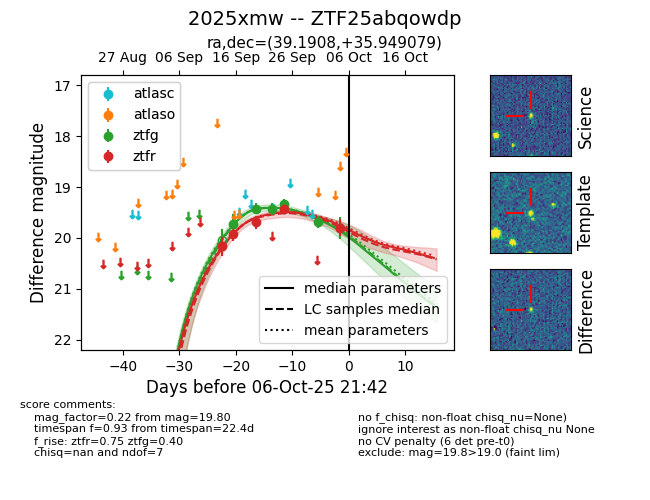
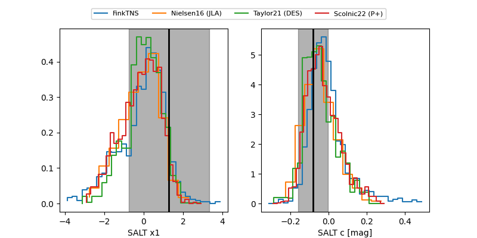

FINK: ZTF25abqowdp
Lasair: ZTF25abqowdp
ALeRCE: ZTF25abqowdp
TNS: 2025xmw
YSE: 2025xmw
ZTF25abqowdp (ztf,fink)
2025xmw (tns,yse)
equatorial (ra, dec) = (39.1908,+35.94908)
galactic (l, b) = (145.7535,-22.21193)


last ztfg=19.81, ztfr=19.80
6 ztfg, 5 ztfr detections